The world is shaped like the kanji for umbrella, only written so poorly, like my handwriting, that all the parts are out of proportion.
My father would be greatly ashamed at the childish way I still form my characters. Indeed, I can barely write many of them anymore. My formal schooling back in Japan ceased when I was only eight.
Yet for present purposes, this badly drawn character will do.
The canopy up there is the solar sail. Even that distorted kanji can only give you a hint of its vast size. A hundred times thinner than rice paper, the spinning disc fans out a thousand kilometers into space like a giant kite intent on catching every passing photon. It literally blocks out the sky.
Beneath it dangles a long cable of carbon nanotubes a hundred kilometers long: strong, light, and flexible. At the end of the cable hangs the heart of the Hopeful, the habitat module, a five-hundred-meter-tall cylinder into which all the 1,021 inhabitants of the world are packed.
The light from the sun pushes against the sail, propelling us on an ever widening, ever accelerating, spiraling orbit away from it. The acceleration pins all of us against the decks, gives everything weight.
Our trajectory takes us toward a star called 61 Virginis. You can’t see it now because it is behind the canopy of the solar sail. The Hopeful will get there in about three hundred years, more or less. With luck, my great-great-great —- I calculated how many “greats” I needed once, but I don’t remember now -- grandchildren will see it.
There are no windows in the habitat module, no casual view of the stars streaming past. Most people don’t care, having grown bored of seeing the stars long ago. But I like looking through the cameras mounted on the bottom of the ship so that I can gaze at this view of the receding, reddish glow of our sun, our past.

The world is shaped like the kanji for umbrella, only written so poorly, like my handwriting, that all the parts are out of proportion.
My father would be greatly ashamed at the childish way I still form my characters. Indeed, I can barely write many of them anymore. My formal schooling back in Japan ceased when I was only eight.
Yet for present purposes, this badly drawn character will do.
The canopy up there is the solar sail. Even that distorted kanji can only give you a hint of its vast size. A hundred times thinner than rice paper, the spinning disc fans out a thousand kilometers into space like a giant kite intent on catching every passing photon. It literally blocks out the sky.
Beneath it dangles a long cable of carbon nanotubes a hundred kilometers long: strong, light, and flexible. At the end of the cable hangs the heart of the Hopeful, the habitat module, a five-hundred-meter-tall cylinder into which all the 1,021 inhabitants of the world are packed.
The light from the sun pushes against the sail, propelling us on an ever widening, ever accelerating, spiraling orbit away from it. The acceleration pins all of us against the decks, gives everything weight.
Our trajectory takes us toward a star called 61 Virginis. You can’t see it now because it is behind the canopy of the solar sail. The Hopeful will get there in about three hundred years, more or less. With luck, my great-great-great —- I calculated how many “greats” I needed once, but I don’t remember now -- grandchildren will see it.
There are no windows in the habitat module, no casual view of the stars streaming past. Most people don’t care, having grown bored of seeing the stars long ago. But I like looking through the cameras mounted on the bottom of the ship so that I can gaze at this view of the receding, reddish glow of our sun, our past.
He stopped for breath, on his way to the river, to peer through dimly lit windows of wakened houses, and saw the silhouettes of people inside watching their parlourwalls and there on the walls the Mechanical Hound, a breath of neon vapour, spidered along, here and gone, here and gone! Now at Elm Terrace, Lincoln, Oak, Park, and up the alley toward Faber's house.
Go past, thought Montag,
don't stop,
go on,
don't
turn in!
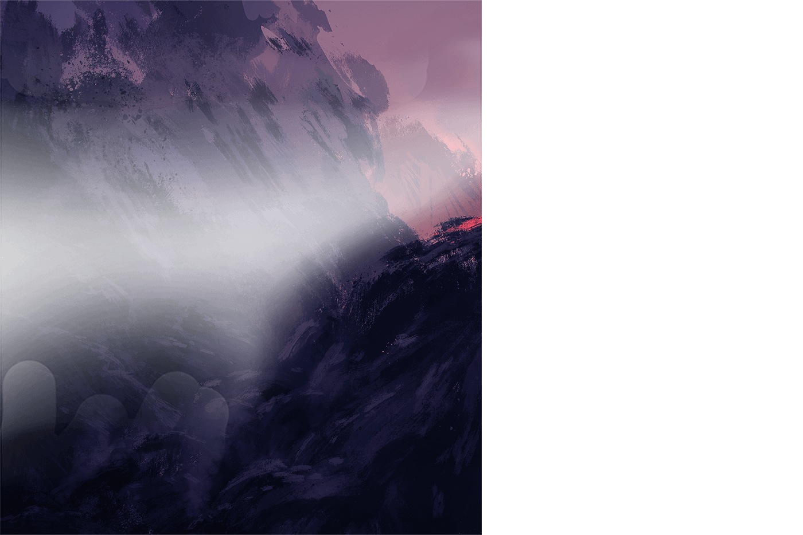
On the parlour wall, Faber's house, with its sprinkler system pulsing in the night air. The Hound paused, quivering.
No! Montag held to the window sill. This way! Here!
The procaine needle flicked out and in, out and in. A single clear drop of the stuff of dreams fell from the needle as it vanished
in the Hound's muzzle.
Montag held his breath, like a doubled fist, in his chest.The Mechanical Hound turned and plunged away from Faber's house down the alley again.
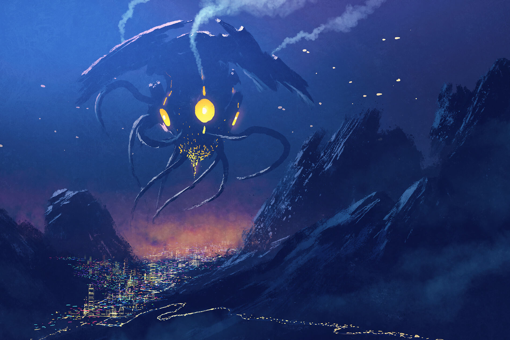
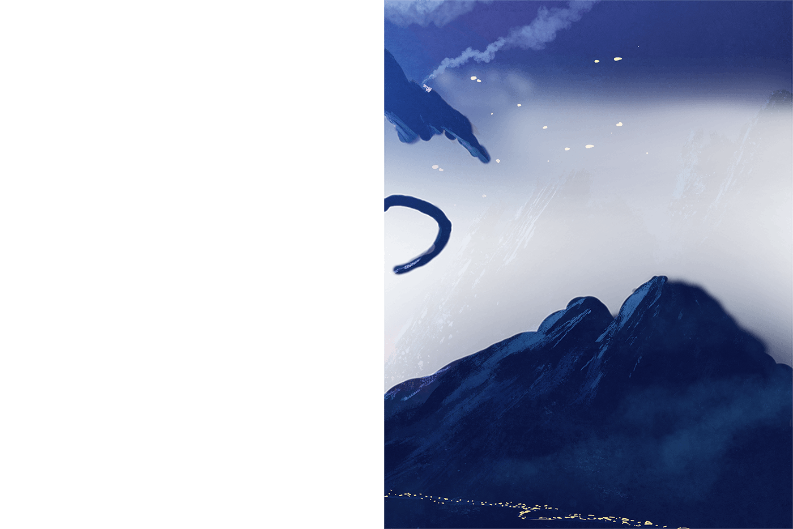
Montag snapped his gaze to the sky. The helicopters were closer, a great blowing of insects to a single light source.
With an effort, Montag reminded himself again that this was no fictional episode to be watched on his run to the river;
it was in actuality his own chess-game he was witnessing,
move
by
move.
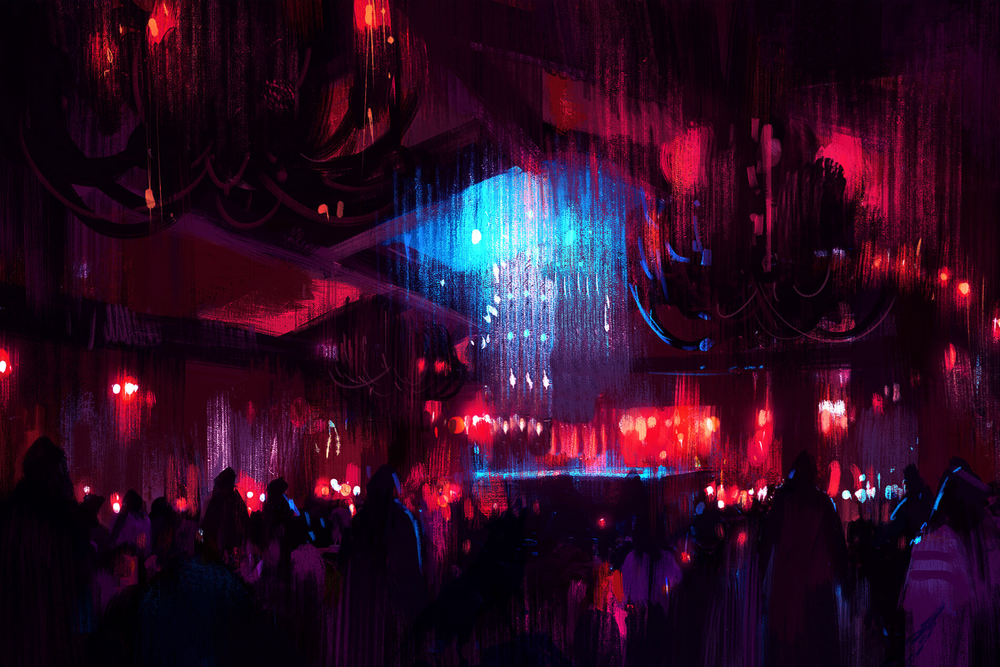
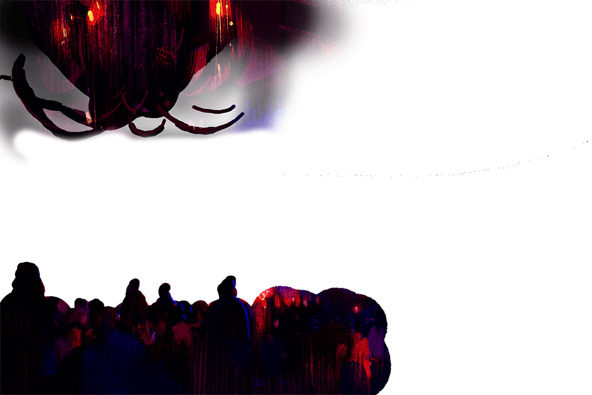
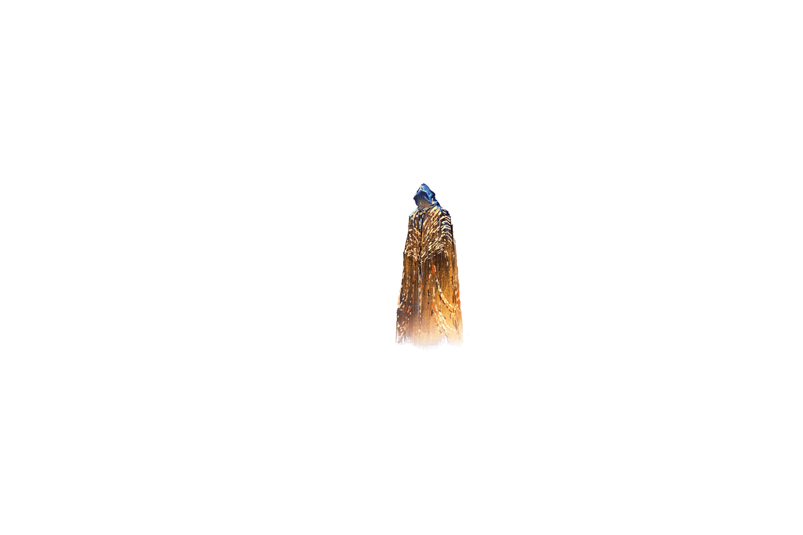
He shouted to give himself the necessary push away from this last house window, and the fascinating seance going on in there!
Hell! and he was away and gone! The alley, a street, the alley, a street, and the smell of the river. Leg out, leg down, leg out
and down. Twenty million Montags running, soon, if the cameras caught him. ��Behind him now twenty million silently baying Hounds
ricocheted across parlours, three-cushion shooting from right wall to centre wall to left wall, gone, right wall, centre wall,
left wall, gone! Montag jammed his Seashell to his ear.
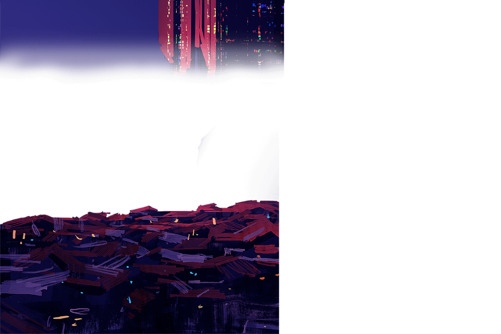
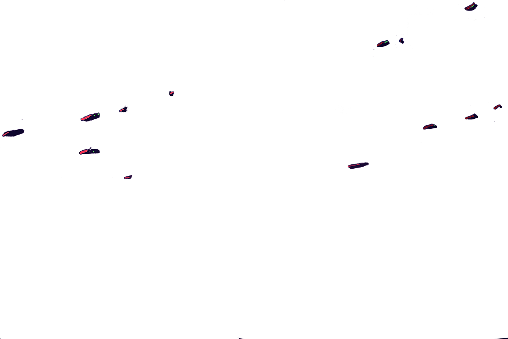
Police suggest entire population in the Elm Terrace area do as follows: Everyone in every house in every street open a
front or rear door or look from the windows. The fugitive cannot escape if everyone in the next minute looks from his house.
Ready! " Of course! Why hadn't they done it before! Why, in all the years, hadn't this game been tried! Everyone up,
everyone out! He couldn't be missed! The only man running alone in the night city, the only man proving his legs!
"At the count of ten now!
One!
Two!
He felt the city rise. Three.
He felt the city turn to its thousands of doors.
Faster! Leg up, leg down !
"Four ! "
The people sleepwalking in their hallways.
"Five! "
He felt their hands on the doorknobs!
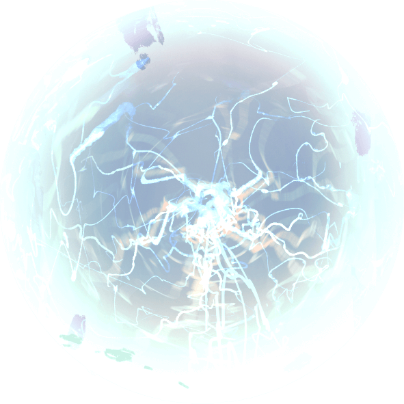
The smell of the river was cool and like a solid rain. His throat was burnt rust and his eyes were wept
dry with running. He yelled as if this yell would jet him on, fling him the last hundred yards.
6...7...8...
The
doorknobs
turned
on five
thousand
doors.
9
He ran out away from the
last row of houses, on a
slope leading down to a solid
moving blackness.
10
doors opened.
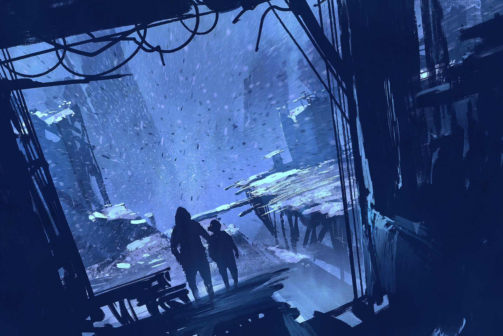
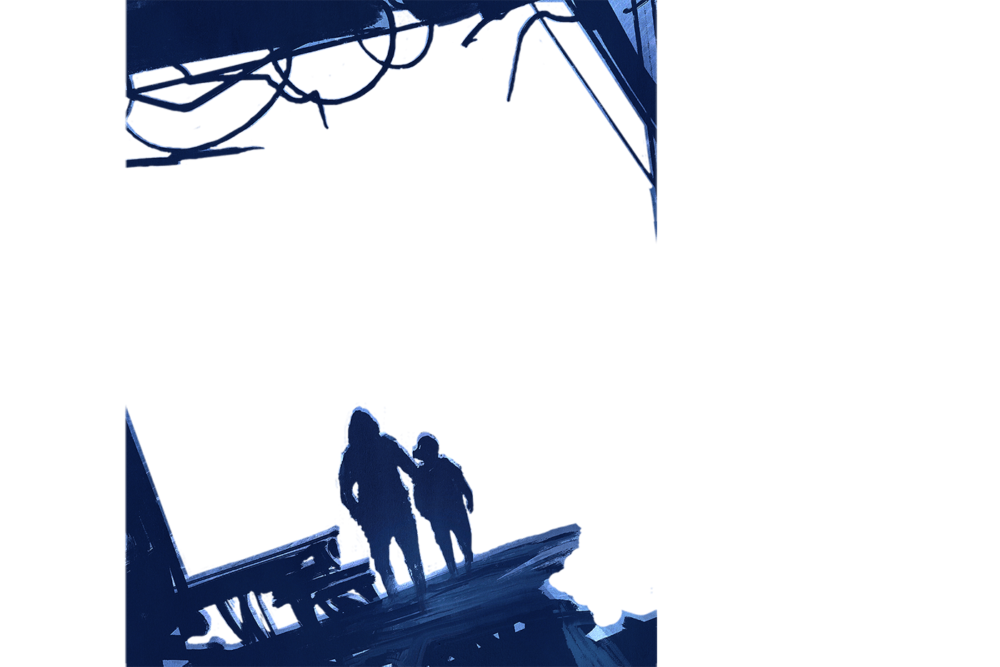
He imagined thousands on thousands of faces peering into yards, into alleys, and into the sky,
faces hid by curtains, pale, night-frightened faces, like grey animals peering from electric
caves, faces with grey colourless eyes, grey tongues and grey thoughts looking out through
the numb flesh of the face.
He touched it, just to be sure it was real. He waded in and stripped in darkness to the skin, splashed his body,
arms, legs, and head with raw liquor; drank it and snuffed some up his nose. Then he dressed in Faber's old
clothes and shoes. He tossed his own clothing into the river and watched it swept away. Then, holding the
suitcase, he walked out in the river until there was no bottom and he was swept away in the dark.
He was three hundred yards downstream when the Hound reached the river. Overhead the great racketing fans of
the helicopters hovered. A storm of light fell upon the river and Montag dived under the great illumination
as if the sun had broken the clouds. He felt the river pull him further on its way, into darkness.
Then the lights switched back to the land, the helicopters swerved over the city again, as if they had picked up another trail.
They were gone. The Hound was gone. Now there was only the cold river and Montag floating in a sudden
peacefulness, away from the city and the lights and the chase,
away
from
everything.